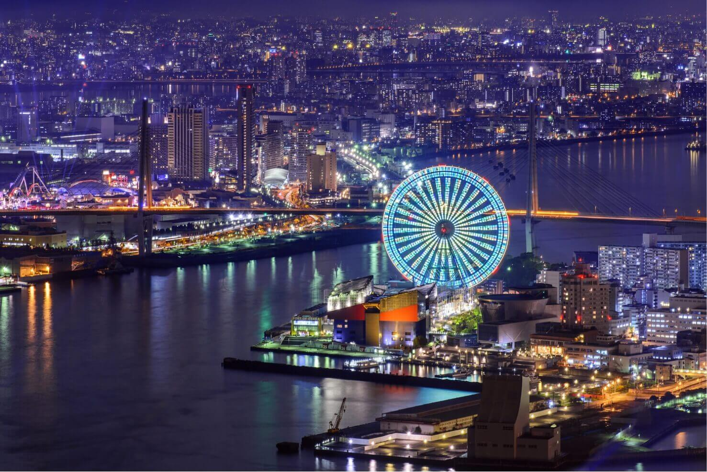
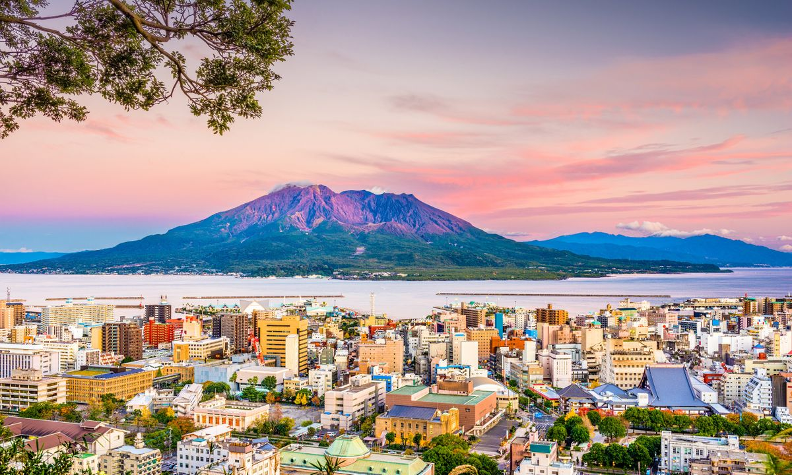

Please Select a Region:


Hokkaido

With its unspoiled nature, Hokkaido attracts many outdoor lovers, including skiers and snowboarders in the colder seasons and hikers, cyclists and campers from June to September. Hokkaido features only one prefecture of the same name, and its major cities include Sapporo, Asahikawa and Hakodate.
Tohoku

Tohoku, in the north of Honshu islands, is one of Japan’s most scenic regions. Known for its mountains and great skiing spots, lakes, hot springs, castles and samurai residences. Its capital, Sendai, is known as the “city of trees” and is home to one of the most popular summer festivals in Japan. Prefectures: Akita, Aomori, Fukushima, Iwate, Miyagi, and Yamagata.
Kanto

Kanto is Japan’s most populated region as it’s home to the greater Tokyo area. You can also find gems like Yokohama,Hakone (and its five lakes), and Kamakura, an ancient city full of historic treasures. Prefectures: Chiba, Gunma, Ibaraki, Kanagawa, Saitama, Tochigi, and Tokyo.
Chubu

The Chubu region is located in central Honshu, Japan’s largest island. It is very diverse, including the cities of Nagoya, Takayama and Kanazawa, the Japanese Alps and the mighty Mount Fuji. Prefectures: Aichi, Fukui, Gifu, Ishikawa, Nagano, Niigata, Shizuoka, Toyama, and Yamanashi.
Kansai
The Kansai or Kinki region is the western region of the island of Honshu and includes the cities of Himeji, Kobe, Kyoto, Osaka, and Nara. It is the cultural and historical heart of Japan and the second-most populated after Kanto. Prefectures: Hyōgo, Kyoto, Mie, Nara, Osaka, Shiga and Wakayama.
Chugoku

Chugoku, also known as the Sanin-Sanyo region, is the westernmost region of Honshu island. This is where you can ride the Sunrise Express night trains and visit the great Izumo Shrine, Okayama (and its Korakuen Garden), Hiroshima and Miyajima. Prefectures: Hiroshima, Okayama, Shimane, Tottori and Yamaguchi.
Shikoku

Shikoku is Japan’s smallest island and region and probably the most peaceful one. It is known for its abundant nature, beautiful rivers, and wonderful onsen, and it is the home of the 88 Temple Pilgrimage as well as Matsuyama and Takamatsu cities. Prefectures: Ehime, Kagawa, Kōchi, and Tokushima.
Kyushu
The Kyushu region includes both Kyushu island and Okinawa islands. Kyushu offers a perfect mix of history, natural beauty, and modern cities like Fukuoka. Okinawa, the southernmost prefecture, its known for its magnificent beaches. Prefectures: Fukuoka, Kumamoto, Nagasaki, Ōita and Saga in Northern Kyushu; Kagoshima, Miyazaki and Okinawa in Southern Kyushu.